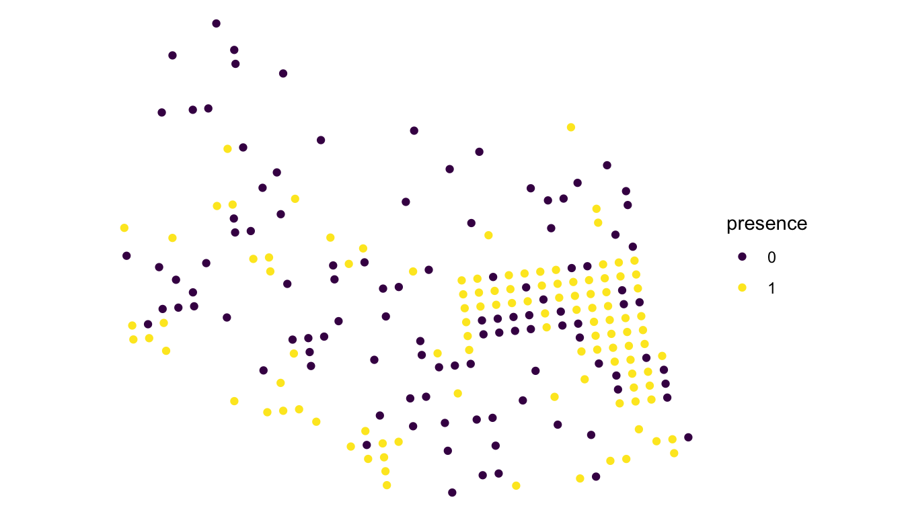
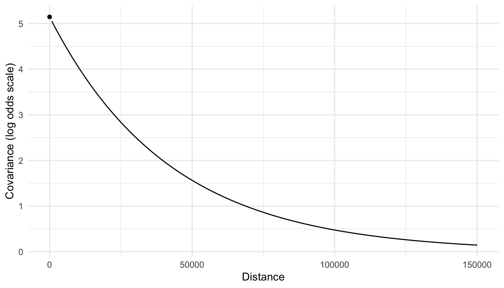
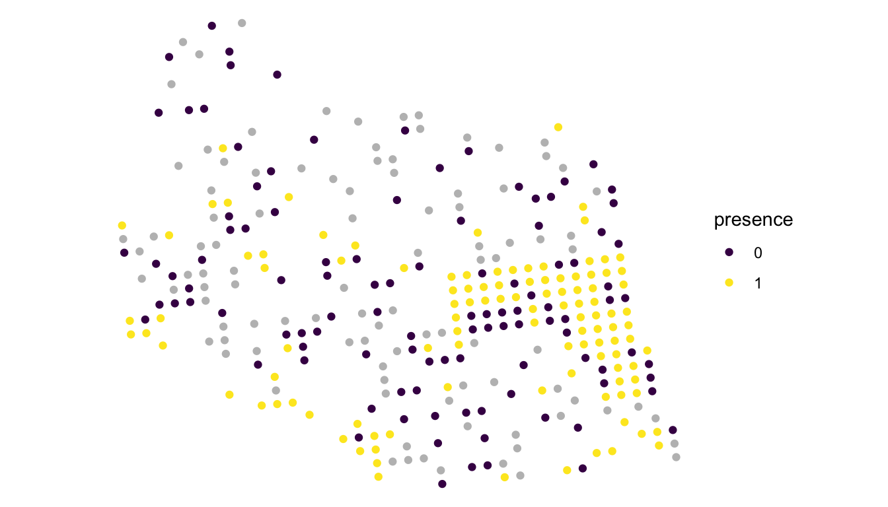
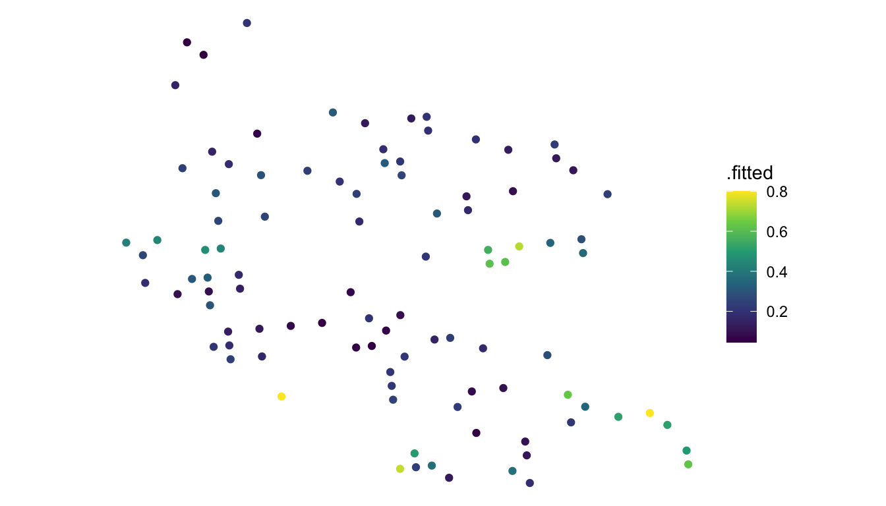

library(spmodel)
library(sf)
library(tidyverse)
theme_set(theme_minimal()) ## set the default theme6 Spatial Logistic Regression
Goals
- Identify an appropriate situation to use a spatial logistic regression model.
- Fit and interpret a spatial logistic regression model.
- Find a predicted probability at an unobserved spatial location.
We now turn our attention to spatial modeling of a binary response variable: a categorical response variable that has exactly two levels. We model a binary response variable with a spatial extension of logistic regression.
Throughout this section, we will use the spmodel, sf, and tidyverse packages:
6.1 Data Introduction: Moose Data
The moose data set from the spmodel package contains information on 218 spatial locations in Alaska. For each location, we have the following variables:
elev, the elevation at the spatial location.strat, a pre-survey stratification variable that is eitherL(Low) orM(Medium).presence, whether or not moose were present at that location (0for absent and1for present).geometry, a point-level geometry column giving the x and y coordinates of each spatial location.
moose
## Simple feature collection with 218 features and 4 fields
## Geometry type: POINT
## Dimension: XY
## Bounding box: xmin: 269085 ymin: 1416151 xmax: 419976.2 ymax: 1541763
## Projected CRS: NAD83 / Alaska Albers
## First 10 features:
## elev strat count presence geometry
## 1 468.9167 L 0 0 POINT (293542.6 1541016)
## 2 362.3125 L 0 0 POINT (298313.1 1533972)
## 3 172.7500 M 0 0 POINT (281896.4 1532516)
## 4 279.6250 L 0 0 POINT (298651.3 1530264)
## 5 619.6000 L 0 0 POINT (311325.3 1527705)
## 6 164.1250 M 0 0 POINT (291421.5 1518398)
## 7 163.5000 M 0 0 POINT (287298.3 1518035)
## 8 186.3500 L 0 0 POINT (279050.9 1517324)
## 9 362.3125 L 0 0 POINT (346145.9 1512479)
## 10 430.5000 L 0 0 POINT (321354.6 1509966)Our goal is to construct a spatial model for moose presence, perhaps using elev and strat as predictors in the model. Note that, because presence is binary (moose are either present or absent), a spatial model with normally distributed random errors is not appropriate. But, before we get into any modeling, we first construct a plot of the data:
ggplot(data = moose, aes(colour = presence)) +
geom_sf() +
theme_void() +
scale_colour_viridis_d()
We see from this plot that there are slightly more locations with moose present than there are with moose absent. And, there appears to be some evidence of spatial correlation: locations that are near each other in space seem to be more similar than locations that are further apart. We also clearly see that the sampled locations were not randomly selected, as there are a lot of locations in the eastern part of the plot. Recall from Chapter 4 that random selection of sites is not a strict assumption for the spatial model. If wildlife managers are most interested in the eastern region of the study area, it is perfectly reasonable to concentrate more samples in that region.
6.2 Non-spatial Logistic Background
Because presence is binary, let’s define \(Y_i\) as
\[ Y_i = \begin{cases} 1, \text{ moose are present at location i} \\ 0, \text{ moose are absent at location i} \end{cases} \tag{6.1}\]
\(Y_i\) is often called a Bernoulli random variable: a variable that takes on a 1 with a certain probability \(\pi\) and a 0 with probability \(1 - \pi\). Note that fitting a spatial model from Chapter 3 no longer makes sense here: if the errors are normally distributed, then the right-hand side of the modeling equation in the form of Equation 4.1 cannot be equal to only the values 0 or 1.
In a non-spatial context, we can fit a standard logistic regression model for the binary response variable presence. To do so, we model the log odds that moose are present:
\[ \text{logodds}(\pi_i) = \text{log}\left(\frac{\pi_i}{1 - \pi_i}\right) = \beta_0 + \beta_1 elev_i + \beta_2 strat_i, \tag{6.2}\]
where \(\pi_i\) is the probability that \(Y_i\) is equal to 1 (and therefore, moose are present at location \(i\)) and \(elev_i\) and \(strat_i\) are the elevation and stratum for location \(i\).
Fitting this non-spatial model in R, we can use the glm() function with the "binomial" family:
mod_nonspatial <- glm(presence ~ elev + strat, data = moose, family = "binomial")
mod_nonspatial |> summary()
##
## Call:
## glm(formula = presence ~ elev + strat, family = "binomial", data = moose)
##
## Coefficients:
## Estimate Std. Error z value Pr(>|z|)
## (Intercept) -0.4247154 0.4208304 -1.009 0.31286
## elev -0.0003173 0.0018607 -0.171 0.86459
## stratM 0.8069702 0.2905887 2.777 0.00549 **
## ---
## Signif. codes: 0 '***' 0.001 '**' 0.01 '*' 0.05 '.' 0.1 ' ' 1
##
## (Dispersion parameter for binomial family taken to be 1)
##
## Null deviance: 302.19 on 217 degrees of freedom
## Residual deviance: 293.75 on 215 degrees of freedom
## AIC: 299.75
##
## Number of Fisher Scoring iterations: 4Interpretations of these coefficients are all on the log odds scale. For example, we estimate that the log odds of moose being present on a medium stratum site is 0.807 units more than the log odds of moose being present on a low stratum site, holding elevation constant. Or, we can interpret \(e^{0.807} = 2.24\) on the odds scale: we estimate that the odds of moose being present on a medium stratum site are 2.24 times the odds of moose being present on a low stratum site. Because most people have a much easier time thinking about probabilities than they do odds or log odds, these interpretations are only mildly useful.
6.3 Spatial Logistic Regression
The model above assumes that, after accounting for the elev and strat predictors, the bernoulli response variables are spatially independent. How can we extend this model to allow for spatial correlation? We simply add the appropriate error terms from Equation 4.1 in Chapter 3 to Equation 6.2. In doing so, we model spatial correlation on the log odds scale:
\[ \text{logodds}(\pi_i) = \text{log}\left(\frac{\pi_i}{1 - \pi_i}\right) = \beta_0 + \beta_1 elev_i + \beta_2 strat_i + \tau_i + \epsilon_i, \tag{6.3}\]
where
- \(\epsilon_i\) has mean 0, variance \(\sigma^2_{ie}\) and the correlation between \(\epsilon_i\) and \(\epsilon_j\) is equal to 0 for all \(i \neq j\),
- \(\tau_i\) has mean 0, variance \(\sigma^2_{de}\), and the correlation between \(\tau_i\) and \(\tau_j\) can be modeled with a spatial correlation function, like the exponential, gaussian, etc.
- all \(\tau\)’s are independent of all \(\epsilon\)’s.
Again, the spatial covariance is modeled on the log odds scale, not on the response scale. Therefore, it is incorrect to say that
\[ \text{cov}(Y_i, Y_j) = \text{cov}(\epsilon_i, \epsilon_j) + \text{cov}(\tau_i, \tau_j). \]
Instead, we model the spatial correlation on the log odds scale (with an exponential correlation function in the equation below):
\[ \text{cov}\left(\text{log}\left(\frac{\pi_i}{1 - \pi_i}\right), \text{log}\left(\frac{\pi_j}{1 - \pi_j}\right)\right) = \text{cov}(\epsilon_i, \epsilon_j) + \text{cov}(\tau_i, \tau_j) = \begin{cases} \sigma_{ie}^2 + \sigma_{de}^2 e^{\frac{-h_{ij}}{\phi}}, & h_{ij} = 0\\ \sigma_{de}^2 e^{\frac{-h_{ij}}{\phi}}, & h_{ij} > 0 \end{cases} \]
As we can see from the equation above, modeling the spatial covariance on the log odds scale makes interpretation of the estimated covariance parameters tougher. We can still construct a spatial covariance plot to assess how covariance decays with distance, but the raw values of covariance are a lot harder to understand: these are on the log-odds scale now, which is not as easy to think about as the response variable scale was in Chapter 3.
Before we discuss interpretations, let’s fit the model with the spglm() function. Note that the syntax of spglm() is identical to that of glm(), except that we add an extra argument to specify the spcov_type we want to use:
mod_spatial <- spglm(presence ~ elev + strat, data = moose, family = "binomial",
spcov_type = "exponential")
mod_spatial |> summary()
##
## Call:
## spglm(formula = presence ~ elev + strat, family = "binomial",
## data = moose, spcov_type = "exponential")
##
## Deviance Residuals:
## Min 1Q Median 3Q Max
## -1.7535 -0.8005 0.3484 0.7893 1.5797
##
## Coefficients (fixed):
## Estimate Std. Error z value Pr(>|z|)
## (Intercept) -2.465713 1.486212 -1.659 0.097104 .
## elev 0.006036 0.003525 1.712 0.086861 .
## stratM 1.439273 0.420591 3.422 0.000622 ***
## ---
## Signif. codes: 0 '***' 0.001 '**' 0.01 '*' 0.05 '.' 0.1 ' ' 1
##
## Pseudo R-squared: 0.06275
##
## Coefficients (exponential spatial covariance):
## de ie range
## 5.145e+00 1.294e-03 4.199e+04
##
## Coefficients (Dispersion for binomial family):
## dispersion
## 1We can interpret the estimated fixed effects in a similar fashion to how they are interpreted in the standard logistic regression model. For example, we estimate that the log odds of moose presence on a medium stratum site are 1.44 units higher than the log odds of moose presence on a low stratum site, holding elevation constant. Or, the odds of moose presence on a medium stratum site are estimated to be \(e^{1.44} = 4.22\) times higher than the odds of moose presence on a low stratum site, holding elevation constant. There is also strong evidence of an association between stratum and moose presence (p-value = 0.000622) while there is only marginal evidence of association between elevation and moose presence (p-value = 0.087).
In the summary output, we can also obtain estimates of the spatial covariance parameters: \(\hat{\sigma}^2_{de} = 5.145\), \(\hat{\sigma}^2_{ie} = 0.001294\), and \(\hat{\phi} = 41990\). A plot of the covariance on the log odds scale is given below.

From the plot, we do see evidence of correlation in the log odds of moose presence, as we expected from looking at the plot of the bernoulli presences in the original data.
Much of what was discussed in earlier sections of these materials pertaining to spatial models with normally distributed random errors also applies to spatial logistic regression models. For example, we can obtain confidence intervals for the fixed effects coefficients:
tidy(mod_spatial, conf.int = TRUE, conf.level = 0.95)
## # A tibble: 3 × 7
## term estimate std.error statistic p.value conf.low conf.high
## <chr> <dbl> <dbl> <dbl> <dbl> <dbl> <dbl>
## 1 (Intercept) -2.47 1.49 -1.66 0.0971 -5.38 0.447
## 2 elev 0.00604 0.00353 1.71 0.0869 -0.000873 0.0129
## 3 stratM 1.44 0.421 3.42 0.000622 0.615 2.26We can glance at the model for some quick summary statistics:
glance(mod_spatial)
## # A tibble: 1 × 10
## n p npar value AIC AICc BIC logLik deviance pseudo.r.squared
## <int> <dbl> <int> <dbl> <dbl> <dbl> <dbl> <dbl> <dbl> <dbl>
## 1 218 3 3 676. 682. 683. 693. -338. 176. 0.0627And, we can augment the model for model diagnostics that we can use to make diagnostic plots:
augment(mod_spatial)
## Simple feature collection with 218 features and 8 fields
## Geometry type: POINT
## Dimension: XY
## Bounding box: xmin: 269085 ymin: 1416151 xmax: 419057.4 ymax: 1541016
## Projected CRS: NAD83 / Alaska Albers
## # A tibble: 218 × 9
## presence elev strat .fitted .resid .hat .cooksd .std.resid
## * <fct> <dbl> <chr> <dbl> <dbl> <dbl> <dbl> <dbl>
## 1 0 469. L -1.95 -0.516 0.0476 0.00465 -0.528
## 2 0 362. L -2.70 -0.361 0.0123 0.000548 -0.363
## 3 0 173. M -1.96 -0.514 0.00455 0.000405 -0.516
## 4 0 280. L -3.15 -0.290 0.00413 0.000117 -0.291
## 5 0 620. L -1.19 -0.728 0.168 0.0427 -0.798
## 6 0 164. M -1.71 -0.576 0.00534 0.000598 -0.578
## # ℹ 212 more rows
## # ℹ 1 more variable: geometry <POINT [m]>Note that, in the augmented output, the .fitted column gives fitted values on the log odds scale. If we want these to be on the probability scale, we can either add an argument to augment:
augment(mod_spatial, type.predict = "response")
## Simple feature collection with 218 features and 8 fields
## Geometry type: POINT
## Dimension: XY
## Bounding box: xmin: 269085 ymin: 1416151 xmax: 419057.4 ymax: 1541016
## Projected CRS: NAD83 / Alaska Albers
## # A tibble: 218 × 9
## presence elev strat .fitted .resid .hat .cooksd .std.resid
## * <fct> <dbl> <chr> <dbl> <dbl> <dbl> <dbl> <dbl>
## 1 0 469. L 0.125 -0.516 0.0476 0.00465 -0.528
## 2 0 362. L 0.0630 -0.361 0.0123 0.000548 -0.363
## 3 0 173. M 0.124 -0.514 0.00455 0.000405 -0.516
## 4 0 280. L 0.0412 -0.290 0.00413 0.000117 -0.291
## 5 0 620. L 0.233 -0.728 0.168 0.0427 -0.798
## 6 0 164. M 0.153 -0.576 0.00534 0.000598 -0.578
## # ℹ 212 more rows
## # ℹ 1 more variable: geometry <POINT [m]>Or, we can backtransform manually using the fact that:
\[ \pi_i = \frac{e^{\text{logodds}(\pi_i)}}{1 + e^{\text{logodds}(\pi_i)}} \tag{6.4}\]
augment(mod_spatial) |> mutate(.fitted_back = exp(.fitted) / (1 + exp(.fitted))) |>
relocate(.fitted_back)
## Simple feature collection with 218 features and 9 fields
## Geometry type: POINT
## Dimension: XY
## Bounding box: xmin: 269085 ymin: 1416151 xmax: 419057.4 ymax: 1541016
## Projected CRS: NAD83 / Alaska Albers
## # A tibble: 218 × 10
## .fitted_back presence elev strat .fitted .resid .hat .cooksd .std.resid
## <dbl> <fct> <dbl> <chr> <dbl> <dbl> <dbl> <dbl> <dbl>
## 1 0.125 0 469. L -1.95 -0.516 0.0476 0.00465 -0.528
## 2 0.0630 0 362. L -2.70 -0.361 0.0123 0.000548 -0.363
## 3 0.124 0 173. M -1.96 -0.514 0.00455 0.000405 -0.516
## 4 0.0412 0 280. L -3.15 -0.290 0.00413 0.000117 -0.291
## 5 0.233 0 620. L -1.19 -0.728 0.168 0.0427 -0.798
## 6 0.153 0 164. M -1.71 -0.576 0.00534 0.000598 -0.578
## # ℹ 212 more rows
## # ℹ 1 more variable: geometry <POINT [m]>6.4 Prediction
Using our fitted spatial logistic regression model, we can also obtain predicted probabilities of moose presence at spatial locations not in the moose data frame. The moose_preds data frame in the spmodel package contains 100 locations in the region of interest that were not sampled for moose presence.
moose_preds
## Simple feature collection with 100 features and 2 fields
## Geometry type: POINT
## Dimension: XY
## Bounding box: xmin: 269085 ymin: 1416151 xmax: 419976.2 ymax: 1541763
## Projected CRS: NAD83 / Alaska Albers
## First 10 features:
## elev strat geometry
## 1 143.4000 L POINT (401239.6 1436192)
## 2 324.4375 L POINT (352640.6 1490695)
## 3 158.2632 L POINT (360954.9 1491590)
## 4 221.3125 M POINT (291839.8 1466091)
## 5 208.6875 M POINT (310991.9 1441630)
## 6 218.3333 L POINT (304473.8 1512103)
## 7 126.8125 L POINT (339011.1 1459318)
## 8 122.0833 L POINT (342827.3 1463452)
## 9 191.0000 L POINT (284453.8 1502837)
## 10 105.3125 L POINT (391343.9 1483791)We can make a plot of these locations overlaid on the sampled locations with:
ggplot(data = moose, aes(colour = presence)) +
geom_sf() +
theme_void() +
scale_colour_viridis_d() +
geom_sf(data = moose_preds, colour = "grey")
Conceptually, the predictions for the log odds of moose presence are found in a similar fashion to the way that the predictions were calculated from a model with normally distributed random errors in Chapter 5. That is, for a particular spatial location we wish to predict for, we use the estimated log odds of presence for locations that we did observe to predict our location of interest’s log odds of presence. Locations that are closer generally have more weight than locations that are further away when there is evidence of spatial correlation.
We can either use augment() or predict() to obtain the predicted log odds of moose presence at these 100 unsampled spatial locations. If the locations we wish to predict at are not in the data frame used to fit the model, then we provide a newdata argument that is a data frame (or, in this case, an sf object) that has the same structure as the data used to fit the model (including values for all predictors in the model and the appropriate coordinates).
augment(mod_spatial, newdata = moose_preds)
## Simple feature collection with 100 features and 3 fields
## Geometry type: POINT
## Dimension: XY
## Bounding box: xmin: 269386.2 ymin: 1418453 xmax: 419976.2 ymax: 1541763
## Projected CRS: NAD83 / Alaska Albers
## # A tibble: 100 × 4
## elev strat .fitted geometry
## * <dbl> <chr> <dbl> <POINT [m]>
## 1 143. L 0.0666 (401239.6 1436192)
## 2 324. L -0.791 (352640.6 1490695)
## 3 158. L -1.60 (360954.9 1491590)
## 4 221. M -0.832 (291839.8 1466091)
## 5 209. M 1.38 (310991.9 1441630)
## 6 218. L -2.59 (304473.8 1512103)
## # ℹ 94 more rows
predict(mod_spatial, newdata = moose_preds)
## 1 2 3 4 5 6
## 0.06664165 -0.79069107 -1.60387940 -0.83159357 1.38183928 -2.58965413
## 7 8 9 10 11 12
## -2.72839733 -2.32496923 -1.17473690 -0.90466930 0.05799546 0.99056609
## 13 14 15 16 17 18
## -0.23933323 -0.71908105 -1.46827406 -1.55190915 -1.24303941 -1.52095927
## 19 20 21 22 23 24
## -1.33020240 -1.34270385 -1.18290244 -1.18140675 -0.65388088 -1.03825533
## 25 26 27 28 29 30
## -1.50181199 -1.40079058 1.38943270 -3.01724805 -0.03723394 -1.11569821
## 31 32 33 34 35 36
## 0.45816827 -1.57152295 -0.63546548 -1.27432691 -0.76083448 -2.30737472
## 37 38 39 40 41 42
## -1.14293043 -1.71496112 -1.57409265 -2.86157515 0.24048281 -3.00741514
## 43 44 45 46 47 48
## -1.24239585 -0.50836234 -2.84875530 -0.92482387 -1.98918604 -1.98764398
## 49 50 51 52 53 54
## -1.17104433 -1.85583242 -1.45015937 -0.85817042 0.51109213 -1.77286716
## 55 56 57 58 59 60
## -0.58274230 -1.18147493 -2.03679898 -1.32568862 -3.06225494 -0.80315086
## 61 62 63 64 65 66
## -0.80596369 -1.36877976 -1.06715436 0.45234920 -1.79642815 -2.43463712
## 67 68 69 70 71 72
## -1.44374223 0.55547296 -2.52374613 -1.32588753 -2.00112730 -2.29721996
## 73 74 75 76 77 78
## -0.51091841 -1.33332860 -2.26834806 -2.01935161 -2.08573552 -2.02644905
## 79 80 81 82 83 84
## -1.52701892 -0.31166064 -2.22601376 -0.14443115 -2.09258984 -2.25393805
## 85 86 87 88 89 90
## -1.50149150 -1.19017489 -1.92658815 -2.54556422 -1.37429146 -3.00392216
## 91 92 93 94 95 96
## -1.38675655 -1.72255710 -1.09102564 -0.74867508 -1.34594296 1.04616966
## 97 98 99 100
## -0.24654727 -1.63627214 -1.06809835 0.01457089While augment() returns the predicted log odds of presence in a data frame, predict() returns the predicted log odds of presence as a vector. If we want the predictions on the probability scale, we can either backtransform the log odds manually using Equation 6.4, or, we can provide a type.predict = "response" argument to augment() or predict():
## shown for augment() only
aug_pred <- augment(mod_spatial, newdata = moose_preds, type.predict = "response")Below, we plot the predicted probabilities:
ggplot(data = aug_pred) +
geom_sf(aes(colour = .fitted)) +
theme_void() +
scale_colour_viridis_c()
The predicted probabilities do seem reasonable given the plot of the original data: predicted probabilities of presence tend to be higher in the eastern and southeastern region of the study area where a lot of moose presences were observed and lower in the northwestern region of the study area where a lot of moose absences were observed.
In this section, we focused only on a spatial extension to logistic regression. Spatial extensions to other generalized linear models, like Poisson regression, Gamma regression, etc. are developed similarly: the spatial modeling is performed on the “link” scale (logit in the case of logistic regression), and these models can be fit by changing the family argument of spglm() to "poisson", "gamma", etc.